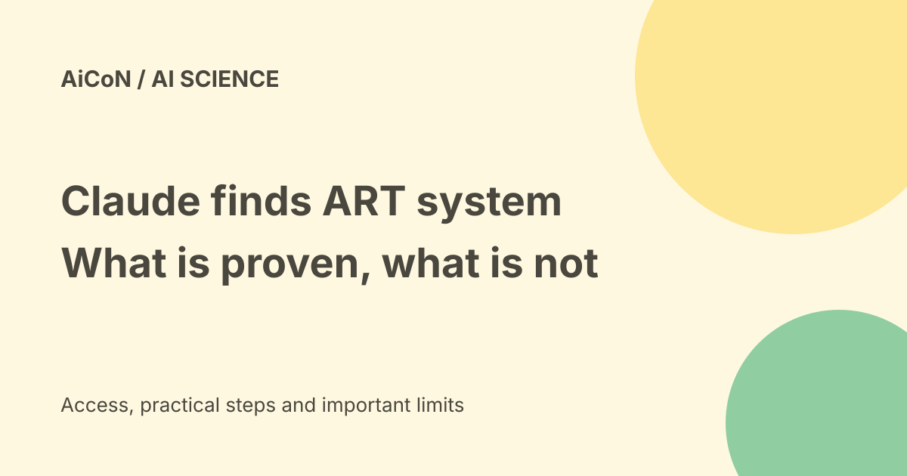

Claude ART enzyme system: what AI agents found and what is still unknown
Anthropic reports that about 950 Claude agents, working for 21 hours under high-level direction, searched more than 200,000 reverse transcriptase proteins and flagged a previously undescribed enzyme system it calls array-associated reverse transcriptases, or ART. A short RNA product was confirmed in the lab, but the system's natural function is still unknown.

What did Anthropic announce?
On 23 September 2026 Anthropic described a research project in which Claude agents were given a broad scientific goal rather than step-by-step instructions. The agents planned searches, ran analyses and narrowed candidates on their own.
The result is a candidate biological system named ART: array-associated reverse transcriptases. Reverse transcriptases are enzymes that copy RNA into DNA. The ART candidates sit next to CRISPR-like repeating DNA arrays, a neighbourhood previously seen in programmable DNA-editing systems.
How the search ran
According to the announcement, roughly 950 agents consumed about 210 million tokens over 21 hours. Starting from more than 200,000 known reverse transcriptase proteins, the pipeline filtered to about 3,500 interesting sequences and then to 20 final candidates.
This is best understood as AI-assisted literature and database triage at a scale a small human team could not finish quickly. The agents proposed; the underlying databases and later lab work supplied the evidence.
What is actually new?
The pre-print notes that a related reverse transcriptase in jumbo phages was already known. What is new, the authors say, is the surrounding system: the repeated DNA arrays associated with these enzymes, which together resemble the architecture of CRISPR systems.
In the lab the team confirmed that a short RNA is expressed. That shows the system is active, not that we know what it does. The paper does not establish a natural function, and no editing tool has been demonstrated from it.
Why the CRISPR comparison matters - and its limit
CRISPR-like repeats plus a reverse transcriptase is a combination seen in systems that can be reprogrammed to target DNA. That is why CRISPR pioneer Feng Zhang called the finding genuinely intriguing, as quoted in the announcement.
Intriguing is not the same as useful. CRISPR itself took years of work between discovery of odd repeats and a working editor. Treat ART as an early-stage biological observation, not a new gene-editing product.
Can you read or verify the work?
Yes. Anthropic published a pre-print PDF alongside its news post, so the sequences, methods and caveats can be inspected directly. Reading the figures and the limitations section gives a more sober picture than any headline.
Anthropic also said it is opening a dedicated life sciences laboratory. That is a signal of continued investment, not independent confirmation of the finding.
Free-versus-paid verdict
The announcement and pre-print are free to read. There is nothing to buy, subscribe to or install, and no consumer product exists around ART.
Any future tool built on this kind of system would be a laboratory and regulatory matter, not an app-store download. No Indian pricing or access question arises today.
What this means for India
For Indian students and researchers, the practical value is the open pre-print: a worked example of AI agents doing large-scale bioinformatics triage. University labs can read the methods and, with ordinary computing, attempt related database searches.
Do not read this as a medical advance. It changes nothing about diagnosis, treatment or supplements, and no health decision should be based on it.
A careful reading route
- Read the official announcement for the intended claims.
- Open the pre-print PDF and check the candidate counts yourself.
- Note which parts are computational predictions and which are lab confirmations.
- Look for what was already known, such as the jumbo-phage enzyme.
- Check whether independent groups comment over the coming months.
- Ignore any product or health claim that goes beyond the paper.
This guide did not rerun the search pipeline or perform lab work; it summarises the authors' own materials.
What changed since the original post?
The original post accurately described the scale and the unknown function. This guide adds the confirmed short-RNA expression, the 3,500-to-20 filtering detail, the previously known jumbo-phage enzyme, and a clearer line between a confirmed observation and a hoped-for tool.
Frequently asked questions
Did Claude discover a new CRISPR?
No. It flagged a system with CRISPR-like features. Its function is unconfirmed and no editing ability has been shown.
Was the finding made by AI alone?
The search and ranking were agent-driven, but human researchers designed the project and lab experiments confirmed RNA expression.
Can I use ART for anything today?
No. There is no tool, kit or service. You can only read the research.
Sources: Official Anthropic announcement · Research pre-print PDF. Checked 7 October 2026.